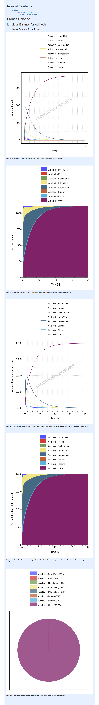

library(ospsuite.reportingengine)
#> Loading required package: ospsuite
#> Loading required package: rClr
#> Loading the dynamic library for Microsoft .NET runtime...
#> Loaded Common Language Runtime version 4.0.30319.42000
#> Loading required package: tlf
#>
#> Attaching package: 'ospsuite.reportingengine'
#> The following object is masked from 'package:tlf':
#>
#> setDefaultErrorbarCapSizeOverview
In Mean Model workflows, the Mass Balance task
(plotMassBalance) aims at reporting diagnostics of the
simulation mass balance.
The diagnostic plots correspond to 5 plots for each molecule (or group of molecules if defined by user) :
- Plot 1: Amount vs time
- Plot 2: Cumulative amount vs time in which the amounts of all the molecule paths included are stacked up.
- Plot 3: Normalized amount vs time in which the amounts are normalized by the drug mass applied at the current time.
- Plot 4: Normalized cumulative amount vs time in which the cumulative amounts are normalized by the drug mass applied at the current time.
- Plot 5: Pie Chart displaying the fraction of drug mass at the last simulated time point for all the molecule paths included.
Since version 2.3, normalization uses the current drug mass and not the final drug mass. As a result, normalized plots 3 and 4 provide more realistic results in case of multiple applications.
Regular mass balance workflow
In the example below, the mass balance task is performed using the
default settings. By default, the mass balance is performed for each
unique xenobiotic molecule (check Simulation$allXenobioticFloatingMoleculeNames()
for more details).
The legend of the mass balance corresponds to the molecule name associated with the compartment name.
Code
# Define file paths for pkml simulation
simulationFile <- system.file("extdata", "Aciclovir.pkml", package = "ospsuite.reportingengine")
simulationSet <- SimulationSet$new(
simulationSetName = "Aciclovir",
simulationFile = simulationFile
)
massBalanceWorkflow <- MeanModelWorkflow$new(
simulationSets = simulationSet,
workflowFolder = "Mass-Balance-Workflow"
)
#> 21/03/2024 - 12:07:40
#> i Info Reporting Engine Information:
#> Date: 21/03/2024 - 12:07:40
#> User Information:
#> Computer Name: fv-az653-851
#> User: runneradmin
#> Login: runneradmin
#> System is NOT validated
#> System versions:
#> R version: R version 4.3.3 (2024-02-29 ucrt)
#> OSP Suite Package version: 12.0.482
#> OSP Reporting Engine version: 2.2
#> tlf version: 1.5.165
massBalanceWorkflow$inactivateTasks(massBalanceWorkflow$getAllTasks())
massBalanceWorkflow$activateTasks("plotMassBalance")
massBalanceWorkflow$runWorkflow()
#> 21/03/2024 - 12:07:40
#> i Info Starting run of Mean Model Workflow
#> 21/03/2024 - 12:07:40
#> i Info Starting run of Plot Mass Balance task
#> 21/03/2024 - 12:07:40
#> i Info Starting run of Plot Mass Balance task for Aciclovir
#> 21/03/2024 - 12:07:43
#> ! Warning No molecule paths included in group 'Aciclovir - Endosome'.
#> 21/03/2024 - 12:07:44
#> ! Warning No molecule paths included in group 'Rest of Aciclovir'.
#> 21/03/2024 - 12:07:53
#> i Info Plot Mass Balance task completed in 0.2 min
#> 21/03/2024 - 12:07:53
#> i Info Executing: pandoc --embed-resources --standalone --wrap=none --toc --from=markdown+tex_math_dollars+superscript+subscript+raw_attribute --reference-doc="C:/Users/runneradmin/AppData/Local/Temp/Rtmpo1MTza/temp_libpath3a478301b10/ospsuite.reportingengine/extdata/reference.docx" --resource-path="Mass-Balance-Workflow" -t docx -o "Mass-Balance-Workflow/Report-word.docx" "Mass-Balance-Workflow/Report-word.md"
#>
#> 21/03/2024 - 12:07:53
#> i Info Mean Model Workflow completed in 0.2 minReport
Mass balance settings
The mass balance task can now be customized using settings defined
through the SimulationSet field
massBalanceFile as a json file.
The settings aims at defining criteria for grouping molecule paths for a molecule or group of molecules. These settings can be useful especially when the simulation includes metabolites that need to be appropriately displayed in the diagnostics. For each plot the file needs to include the following fields:
-
"Name": name of the sub-section in report -
"Molecules": array of the molecule names (or/and metabolites) to be included in the mass balance -
"Groupings": array of the grouping names and criteria
Groupings
The field "Groupings" is an array that defines how to
group and label molecule paths in the mass balance diagnostic plots.
Thus, each element of "Groupings" includes the following
fields:
-
"Name": reported name of the group -
"Include": array of included molecule paths -
"Exclude": array of excluded molecule paths (optional) -
"ExcludePreviousGroupings": logical to exclude molecule paths that have been already included in previous groupings (optional - default istrue)
Note that inclusion and exclusion criteria for molecule paths
leverage wild
card symbols (*).
The most common use case is to include all the paths for specific compartments such as Plasma. Here this would translate as:
Another use case is when a metabolite is defined using the molecule name as prefix. Then, the metabolite can be included in the grouping.
A workflow leveraging mass balance settings
In this workflow, the following mass balance settings file is used. The file is also available in GitHub.
{
"MassBalancePlots": [
{
"Name": "Name of mass balance sub-section (optional)",
"Molecules": [
"Aciclovir"
],
"Groupings": [
{
"Name": "Intracellular",
"Include": [
"Organism|**|Intracellular|Aciclovir*"
]
},
{
"Name": "Plasma & Blood Cells",
"Include": [
"Organism|**|Plasma|Aciclovir*",
"Organism|**|BloodCells|Aciclovir*"
]
},
{
"Name": "Interstitial",
"Include": [
"Organism|**|Interstitial|Aciclovir*"
]
},
{
"Name": "Lumen",
"Include": [
"Organism|Lumen|*|Aciclovir*"
],
"Exclude":[
"Organism|Lumen|Feces|Aciclovir*"
]
},
{
"Name": "Excreted",
"Include": [
"Organism|Kidney|Urine|Aciclovir*",
"Organism|Lumen|Feces|Aciclovir*"
]
},
{
"Name": "Rest of Aciclovir",
"Include": [
"Organism|**|Aciclovir*"
]
}
]
},
{
"Name": "Aciclovir Mass Balance focus on Fat",
"Molecules": [
"Aciclovir"
],
"Groupings": [
{
"Name": "Fat",
"Include": [
"Organism|Fat|*|Aciclovir"
]
},
{
"Name": "Plasma & Blood Cells",
"Include": [
"Organism|**|Plasma|Aciclovir",
"Organism|**|BloodCells|Aciclovir"
]
},
{
"Name": "Excreted",
"Include": [
"Organism|Kidney|Urine|Aciclovir",
"Organism|Lumen|Feces|Aciclovir"
]
},
{
"Name": "Rest",
"Include": [
"Organism|**|Aciclovir"
]
}
]
}
]
}The workflow is similar to the previous one except that the mass
balance settings file is provided to the SimulationSet
object.
Code
simulationFile <- system.file("extdata", "Aciclovir.pkml", package = "ospsuite.reportingengine")
massBalanceFile <- system.file("extdata", "mass-balance-settings.json", package = "ospsuite.reportingengine")
simulationSet <- SimulationSet$new(
simulationSetName = "Aciclovir",
simulationFile = simulationFile,
massBalanceFile = massBalanceFile
)
massBalanceWorkflow <- MeanModelWorkflow$new(
simulationSets = simulationSet,
workflowFolder = "Mass-Balance-Workflow"
)
#> 21/03/2024 - 12:07:57
#> i Info Reporting Engine Information:
#> Date: 21/03/2024 - 12:07:57
#> User Information:
#> Computer Name: fv-az653-851
#> User: runneradmin
#> Login: runneradmin
#> System is NOT validated
#> System versions:
#> R version: R version 4.3.3 (2024-02-29 ucrt)
#> OSP Suite Package version: 12.0.482
#> OSP Reporting Engine version: 2.2
#> tlf version: 1.5.165
massBalanceWorkflow$inactivateTasks(massBalanceWorkflow$getAllTasks())
massBalanceWorkflow$activateTasks("plotMassBalance")
massBalanceWorkflow$runWorkflow()
#> 21/03/2024 - 12:07:57
#> i Info Starting run of Mean Model Workflow
#> 21/03/2024 - 12:07:57
#> i Info Starting run of Plot Mass Balance task
#> 21/03/2024 - 12:07:57
#> i Info Starting run of Plot Mass Balance task for Aciclovir
#> 21/03/2024 - 12:08:17
#> i Info Plot Mass Balance task completed in 0.3 min
#> 21/03/2024 - 12:08:17
#> i Info Executing: pandoc --embed-resources --standalone --wrap=none --toc --from=markdown+tex_math_dollars+superscript+subscript+raw_attribute --reference-doc="C:/Users/runneradmin/AppData/Local/Temp/Rtmpo1MTza/temp_libpath3a478301b10/ospsuite.reportingengine/extdata/reference.docx" --resource-path="Mass-Balance-Workflow" -t docx -o "Mass-Balance-Workflow/Report-word.docx" "Mass-Balance-Workflow/Report-word.md"
#>
#> 21/03/2024 - 12:08:17
#> i Info Mean Model Workflow completed in 0.3 minSince the settings included 2 plots, the report includes 2 sub-sections.